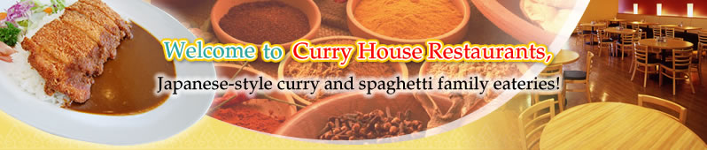
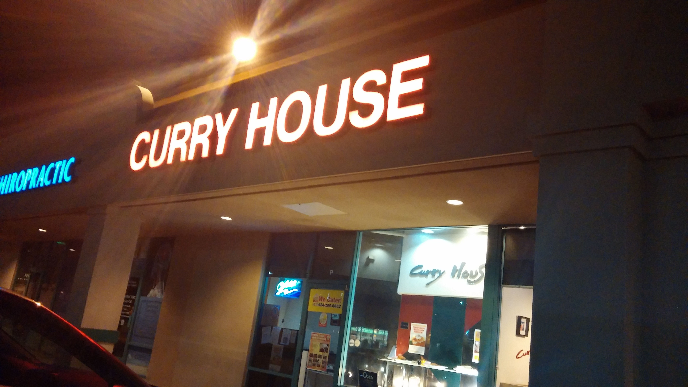

Curry House
Curry House was a chain of restaurants located in southern California that focused on Japanese-style curry and other related dishes.

I never lived in southern California, but I did live in Arizona, so trips to LA were common especially around my college years. Stopping by Curry House was always a little bit of a treat while traveling, and it became a little bit of an inside joke among friends that it was a necessary part of any pilgrimage to LA.
In early 2020, all Curry House locations ceased operations. I believe the last time I ate at Curry House was in the summer of 2018 when traveling to LA for Anime Expo. I still miss it a lot.
In general, my go to order from Curry House before it closed was the standard chicken breast katsu curry, sometimes with added cheese if I was feeling extra.
Unfortunately I don't have any of my own pictures of the food from Curry House. All I have is this picture of the exterior of one location when it was closed:

Do you have any memories or pics from Curry House? Perhaps this page could turn into a community tribute? ...Probably not lol, but I'm happy to hear and maybe post some of your delicious memories if you want to share!